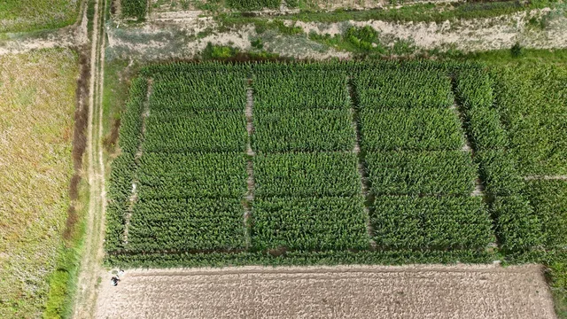
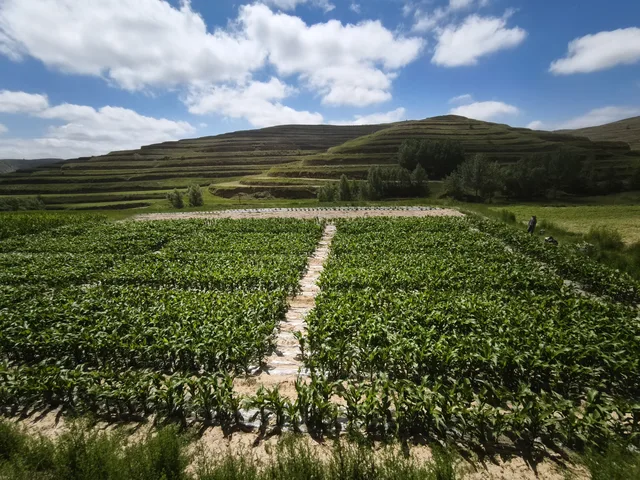
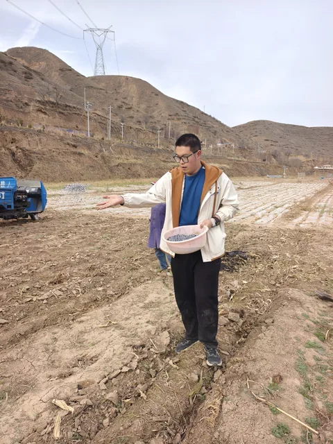
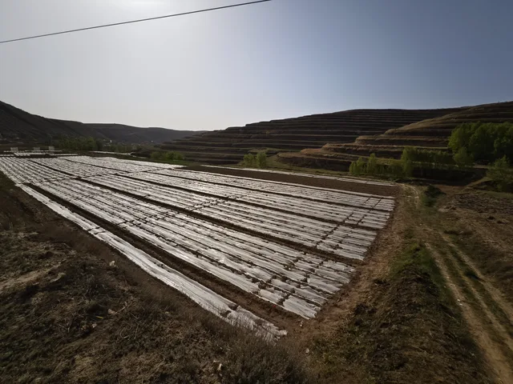
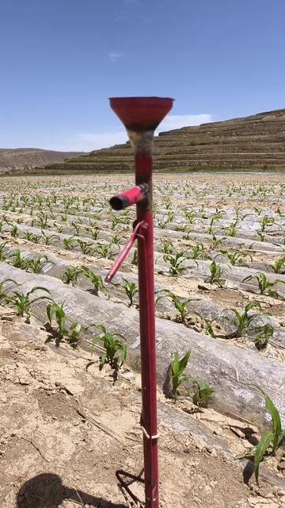
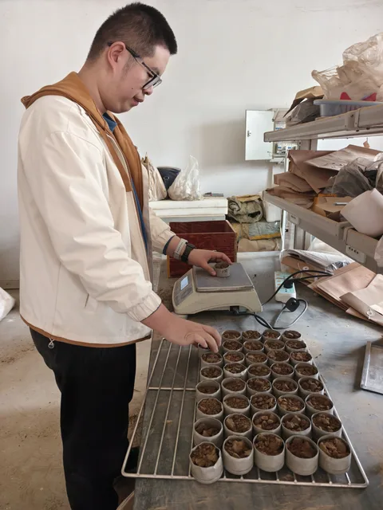

Driving Effects of Maize–Legume Intercropping on Nutrient Turnover & Moisture Dynamics in Dryland Agroecosystems
Investigating interspecific resource sharing, root spatial partitioning, and belowground carbon-nitrogen-phosphorus turnover across the semi-arid Loess Plateau. This project compares monoculture maize against intercrops with lablab bean (Lablab purpureus) and forage soybean (Glycine max) to resolve whether hydrological facilitation or severe competition predominates under seasonal drought stress.
Field Campaign & Work Photos
Click any photo for high-resolution inspection
Aerial UAV Field Survey
Low-altitude drone orthophoto capturing the full experimental layout of rainfed maize–legume intercropping plots on the Loess Plateau.

Experimental Plot Partitioning
Split-plot field boundary demarcation and randomized strip arrangements comparing monoculture maize with lablab bean and soybean.

Precision Basal Fertilization
Quantitative basal fertilizer application calibrated to baseline dryland soil nitrogen and phosphorus nutrient levels.

Plastic Film Mulching Operation
Ridge-furrow plastic film mulching deployed to suppress surface soil water evaporation and preserve rainfall moisture.

Seedling Inspection & Gap Filling
Early-stage stand density auditing and targeted reseeding to ensure uniform crop emergence across all treatments.

Soil Moisture Determination
Stratified soil core sampling, weighing, and gravimetric oven-drying calculations for 0–200 cm moisture profiles.